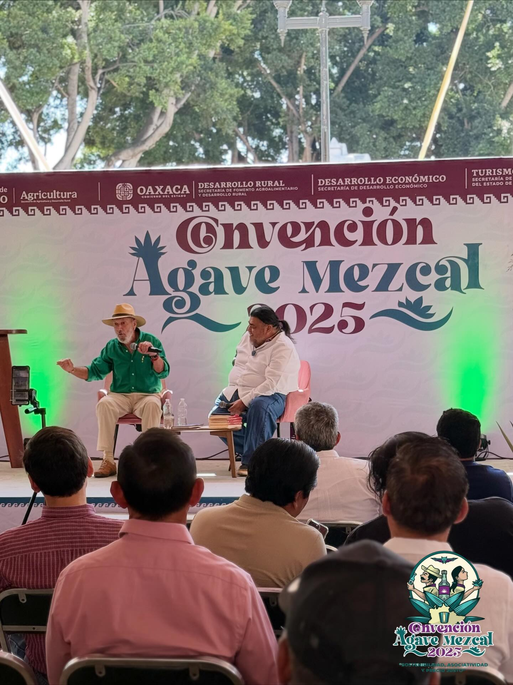
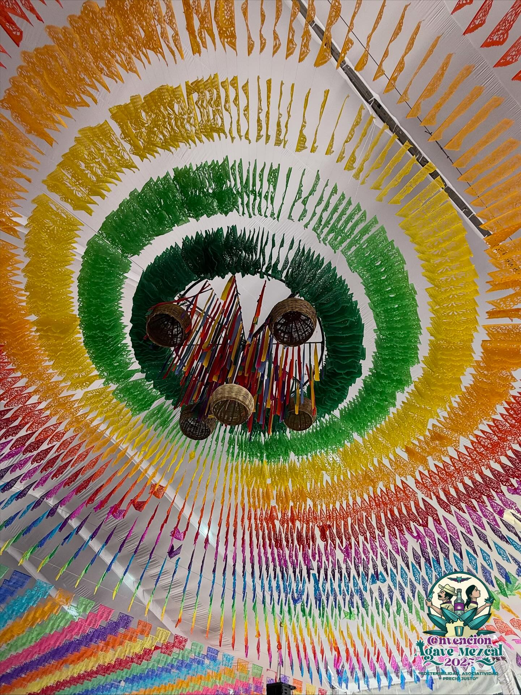

Nuestra Historia y Herencia Familiar
"Mezcal Mil Sensaciones nace del legado de una familia que ha vivido el mezcal desde sus raíces. No comenzó como un negocio, sino como una tradición entre magueyes, tierra y fuego."

Damián Olivera Díaz
Maestro Mezcalero · El Gramal, Oaxaca
Damián Olivera Díaz
Damián Olivera Díaz es el corazón de Mezcal Mil Sensaciones. Segunda generación de maestros mezcaleros, su historia comienza desde la niñez, entre magueyes, aprendiendo a sembrar, cuidar y respetar la tierra. Lo que para muchos es un proceso, para él ha sido una forma de vida.
Con los años, perfeccionó su técnica sin perder la esencia: hacer mezcal como se hacía antes, con paciencia, conocimiento y pasión.
"Hoy juntos, no solo elaboramos mezcal… creamos emociones en cada botella. Porque detrás de cada gota, hay historia, familia y alma."
Nuestra Misión
Preservar y compartir la herencia mezcalera de tres generaciones en El Gramal, Nejapa de Madero, elaborando mezcales artesanales de lotes pequeños con absoluto respeto por los ciclos del maguey, la tierra oaxaqueña y las enseñanzas tradicionales que conectan con los sentidos en cada trago.
Nuestra Visión
Consolidar a Mezcal Mil Sensaciones como un referente de autenticidad artesanal en Oaxaca, México y Estados Unidos, llevando el orgullo de nuestra familia y de la comunidad de El Gramal a las mejores mesas, barras y coleccionistas del mundo sin sacrificar jamás nuestra esencia artesanal.
Artesanal y Auténtica
Cero producción industrial en masa. Cada lote se cuida personalmente desde el corte hasta la destilación.
Tradicional y Familiar
Conocimiento vivo transmitido de abuelo a padre e hijo durante tres generaciones en Oaxaca.
Sostenible y Cercana a la Tierra
Respetamos los ciclos naturales de maduración de cada maguey en los cerros y parcelas de El Gramal.
Nuestro Campo y Eventos en Oaxaca
El Arte del Corte del Maguey
Jima Tradicional con Coa

Convención Agave Mezcal 2025 · Degustación

Presentación Oficial en Oaxaca

Foro Convención Agave Mezcal 2025

Cultura y Tradición Mezcalera